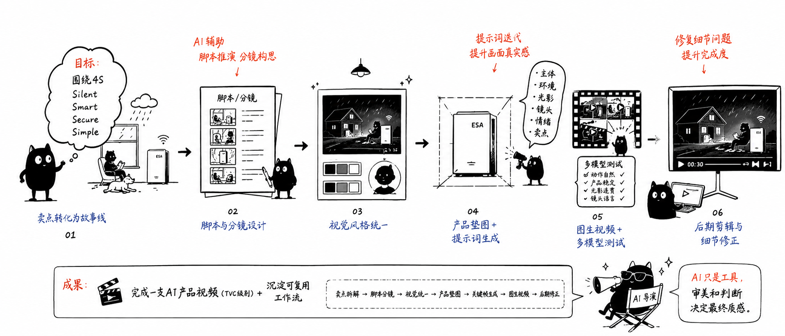

Output
项目成果
完成一支围绕 ESA 户用储能 4S 卖点展开的 AI 产品视频，并沉淀出一套可复用的 AI 视频制作流程。
卖点拆解 → 脚本分镜 → 视觉统一 → 产品垫图 → 关键帧生成 → 图生视频 → 后期修正
AI PRODUCT VIDEO / ESA 4S TVC
围绕 ESA 户用储能产品的 4S 卖点，将 Silent、Smart、Secure、Simple 转化为有故事线、有情绪氛围、有商业传播价值的 AI 产品视频。
第一版先展示成片结果，让页面从“作品完成度”进入，再往下解释 AI 视频如何从卖点、脚本、垫图和后期修正一步步搭起来。
用一张 21:9 小黑手绘图展示完整链路：卖点拆解、脚本分镜、视觉统一、产品垫图、图生视频、多模型测试和后期细节修正。

Output
完成一支围绕 ESA 户用储能 4S 卖点展开的 AI 产品视频，并沉淀出一套可复用的 AI 视频制作流程。
Takeaway
AI 视频真正的难点不是“生成”，而是如何让生成结果接近商业广告片标准。产品理解决定内容方向，审美和镜头判断决定画面质感，提示词和垫图决定画面上限，后期修正决定最终完成度。